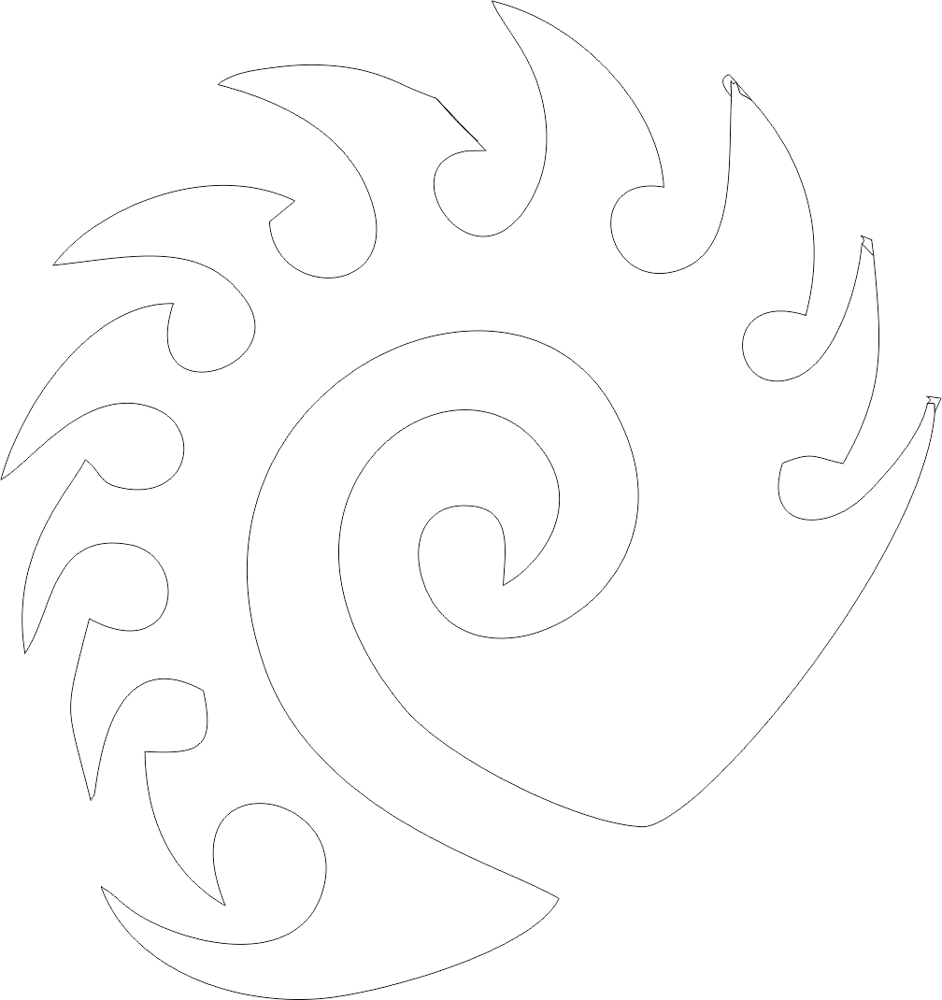

Here is the 2d design stuff. The projects you see below were all designed in Corell draw and are vector images. More specifically I used a trace function inorder to create, for the most part, images of the logos. i later used a trim tool to clean up the images, but i forgot to take a screenshot of it.
Also for the first picture, i was able to laser cut it out of card board. this was done by sending it to the laser cutter like you would a printer and then set the dimentions to that of the laser cutter and then apply setting for cardboard.
